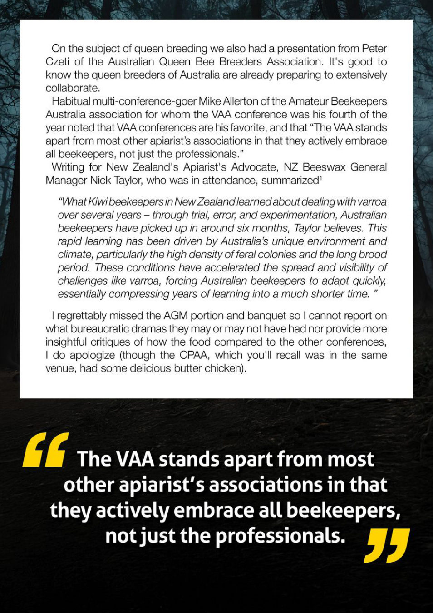

On the subject of queen breeding we also had a presentation from Peter
Czeti of the Australian Queen Bee Breeders Association.
It's good to
know the queen breeders of Australia are already preparing to extensively
collaborate.
Habitual multi-conference-goer Mike Allerton of the Amateur Beekeepers
Australia association for whom the VAA conference was his fourth of the
year noted that VAA conferences are his favorite, and that “The VAA stands
apart from most other apiarist’s associations in that they actively embrace
all beekeepers, not just the professionals.”
Writing for New Zealand's Apiarist's Advocate, NZ Beeswax General
Manager Nick Taylor, who was in attendance, summarized’
“What Kiwibeekeepers in NewZealandlearnedaboutdealing with varroa
over several years — through trial, error, and experimentation, Australian
beekeepers have picked up in around six months, Taylor believes. This
rapid learning has been driven by Australia’s unique environment and
climate, particularly the high density of feral colonies and the long brood
period. These conditions have accelerated the spread and visibility of
challenges like varroa, forcing Australian beekeepers to adapt quickly,
essentially compressing years of learning into
a much shorter time.
I regrettably missed the AGM portion and banquet so
I cannot report on
what bureaucratic dramas they may or may not have had nor provide more
insightful critiques of how the food compared to the other conferences,
I do apologize (though the CPAA, which you'll recall was in the same
venue, had some delicious butter chicken).
44 The VAA stands apart from most
other apiarist’s associations in that
they actively embrace all beekeepers,
notjust the professionals.
5 I5 I